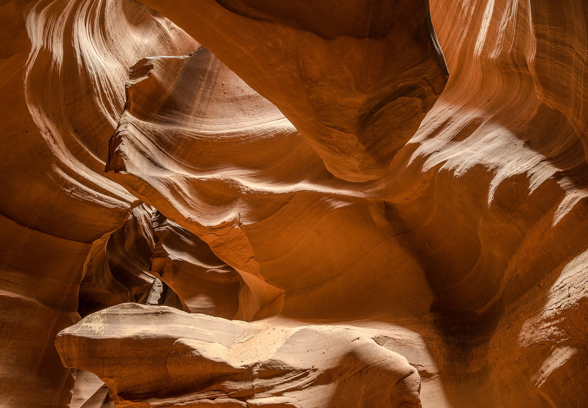

Antelope Canyon has a quieter sibling. Canyon X — named for the X carved into its ceiling by water and wind — has the same sculpted, glowing walls as the famous sections, in two canyon corridors, with a fraction of the foot traffic. For photographers especially, fewer people in the frame is worth a great deal.
The day pairs Canyon X with the Horseshoe Bend overlook, with round-trip transport from Sedona or Flagstaff and a Navajo guide in the canyon, as all Antelope visits require.